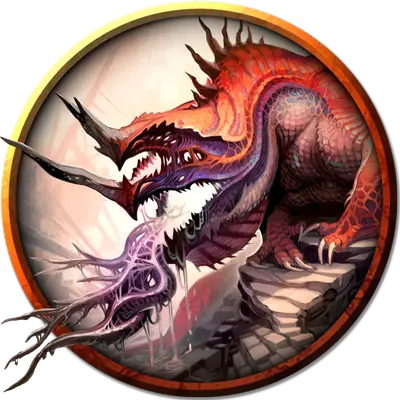

Молодой потустороний ужас
Juvenile Eldritch Horror
Огромный Монстр, нейтрально-злой

Класс Доспеха 17 (природный доспех)
Хиты 168 (16к12 + 64)
Скорость 50 футов, лазая 40 футов
| мод | спас | ||
|---|---|---|---|
| СИЛ | 23 | +6 | +6 |
| ЛОВ | 16 | +3 | +3 |
| ТЕЛ | 18 | +4 | +4 |
| мод | спас | ||
|---|---|---|---|
| ИНТ | 18 | +4 | +4 |
| МДР | 14 | +2 | +2 |
| ХАР | 12 | +1 | +1 |
Навыки Восприятие +6, Скрытность +7
Иммунитет к урону электричество
Чувства тёмное зрение 90 футов, пассивное Восприятие 16
Опасность 11 (7200 опыта)
Бонус мастерства +4
Действия
Мультиатака. Потусторонний ужас совершает две атаки: одну Укусом и одну Сжиманием.
Укус. . Рукопашная атака оружием: +10 к попаданию, досягаемость 10 фт., одна цель. Попадание: 22 (3к10 + 6) колющего урона.
Сжимание. . Рукопашная атака оружием: +10 к попаданию, досягаемость 5 фт., одно Большое или меньше существо. Попадание: 17 (2к10 + 6) дробящего урона плюс 17 (2к10 + 6) рубящего урона. Цель становится схваченной (Сл высвобождения 16), если потусторонний ужас еще не сжимает существо, и цель считается опутанной до тех пор, пока этот захват не окончится.
Молниеносное дыхание (перезарядка 5–6). Потусторонний ужас выдыхает линию электричества длиной 20 футов и шириной 5 футов. Каждое существо в этой линии должно совершить спасбросок Ловкости Сл 16, получая 66 (12к10) урона электричеством в случае провала или половину этого урона в случае успеха.
Использование заклинаний. Потусторонний ужас накладывает одно из следующих заклинаний, без материальных компонентов и использует Интеллект в качестве заклинательной характеристики (Сл спасброска 14):
• 2/день каждое: глухота/слепота [blindness/deafness], размытый образ [blur];
• 1/день: проекция [project image].
Проглатывание. Потусторонний ужас совершает одну атаку Укусом против цели Среднего размера или меньше, которую он схватил. Если атака попадает, цель также проглатывается, и захват оканчивается. Будучи проглоченной, цель ослеплена и опутанна, она имеет полное укрытие от атак и других эффектов вне ужаса и получает 21 (6к6) урона кислотой в начале каждого хода ужаса. Потусторонний ужас может проглотить только одно существо за раз.
Если потусторонний ужас получает 30 или более урона за один ход от проглоченного существа, ужас должен преуспеть в спасброске Телосложения Сл 14 в конце этого хода, иначе отрыгнет существо, которое падает ничком в пространстве в пределах 10 футов. от потустороннего ужаса. Если ужас умирает, проглоченное существо перестаёт быть опутанным им и может выбраться из трупа, используя 15 футов перемещения, при выходе падая ничком.